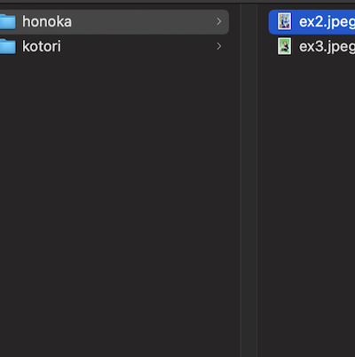
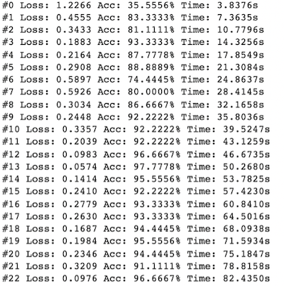
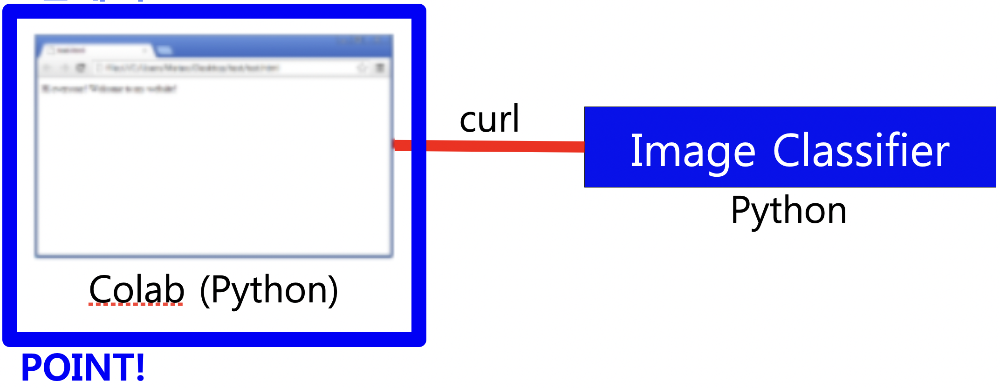

実装機能

イメージを自動的に整理する機能
学習したモデルを使用すると、画像を自動的にフォルダに分類できます。

イメージで学習する機能
学習したモデルを作成するために、所定の画像を事前に学習します。
社会に貢献しようとしたこと
画像分類モデルだけを生成すると自動的に写真の整理をしてくれるので、写真を一つ一つずつ確認して分類する必要はありません。
背景と目的
写真を一つずつ確認して分類するのはとても面倒です。 そこで、画像分類モデルを利用して自動的に整理するプログラムを実装しました。
学んだこと
Jupyter Notebookで学習したモデルを作成する方法を学びました。
Flaskでサーバーを構築してHTTP POSTリクエストを処理する方法を学びました。
PythonでCommandまたはTerminalコマンドを実行する方法を学びました。
進行手順
「マ・ドンソク/キム・ジョングク/イ・ビョンホン分類器」のソースコードをダウンロードしました。
ウェブから画像をダウンロードする方法から、自分が直接画像をアップロードする方法に変更しました。
Flaskを使用しているため、画像分類モデルが作成されるとリンクが生成されます。 したがって、そのリンクにHTTP POSTに画像を送信すると、送信した画像がどのクラスに属しているかが応答します。 このリンクを使用してデスクトップの画像が分類されるようにするので、Pythonプログラムを別にしました。
PythonでCommandまたはTerminalコマンドを実行する方法、フォルダが存在しない場合にフォルダを作成する方法、ファイルリストを読み込む方法がわからず、Googleですべて見つかりました。
このようにして目的のプログラムを実装できました。
能力強化のために最も努力したこと
Jupyter Notebookで実装された既存のプログラム分析と新しいプログラムで再構築
全体構造

使用技術
Jupyter Notebook, Flask
開発環境
Colab, Python IDLE
追加の説明
「マ・ドンソク/キム・ジョングク/イ・ビョンホン分類器」ソースコード
ソースコード